Tune a Constructed deck with the Leak Finder: what to cut, what to add
A step-by-step guide on a real Standard deck. You will point the Leak Finder at one deck and one queue, read where it loses, find the cards that pull their weight and the ones that don't, check a suspect card by itself, and look for the answers to what beats you, in your collection or to craft.
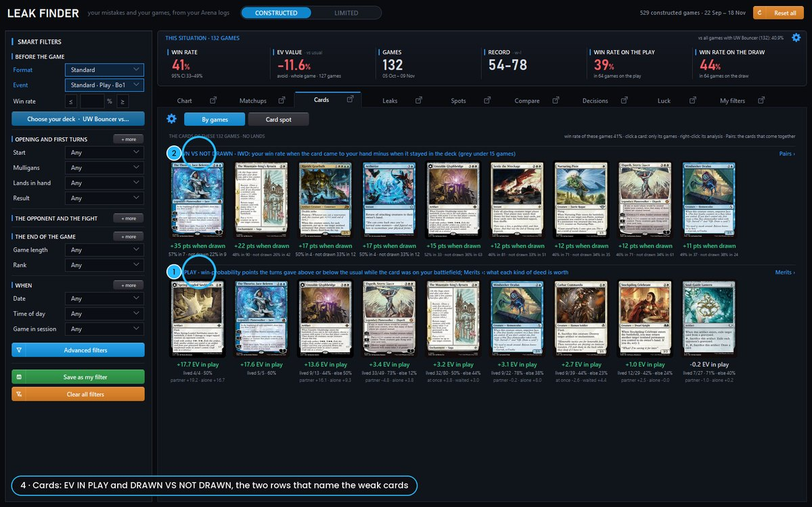
Before you start
The deck in the screenshots is a white-blue bounce deck from our own log, UW Bouncer: 132 games of Standard Bo1, 54 won and 78 lost, a 41% win rate. Those games were all played in the Play queue. If you are climbing the ladder, pick the Ranked queue instead; the steps are the same.
Two things to keep in mind all the way through. First, the tool compares cards inside your deck: it can tell you which of your cards do less than the others, but it cannot tell you how a card you have never played would do in your list. Second, numbers on a handful of games are hints. The tool greys out the cards under its minimum number of games, and you should treat them the same way.
1 · Constructed, format and queue
Switch the pill at the top to CONSTRUCTED. In the Smart filters on the left, set Format to Standard and Event to the queue you are tuning for: Standard · Ranked · Bo1 for the ladder. Bo1 and Bo3 are different games, with different sideboards and different opponents, so don't mix them.
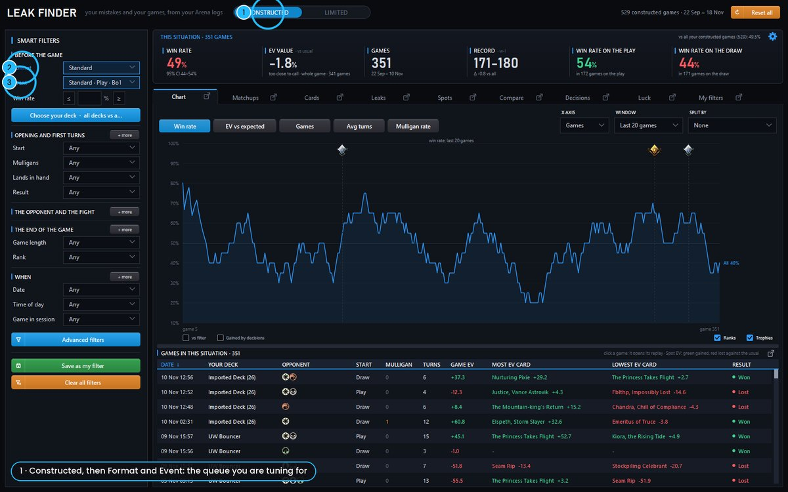
2 · Choose your deck
Press Choose your deck. On the left, your decks with their win rate; pick the one you want to tune. On the right leave vs all: you want the deck against everybody first. The table below already gives you a first read, by color: here UW Bouncer goes 2-8 against three-color decks and 2-7 against Dimir colors.
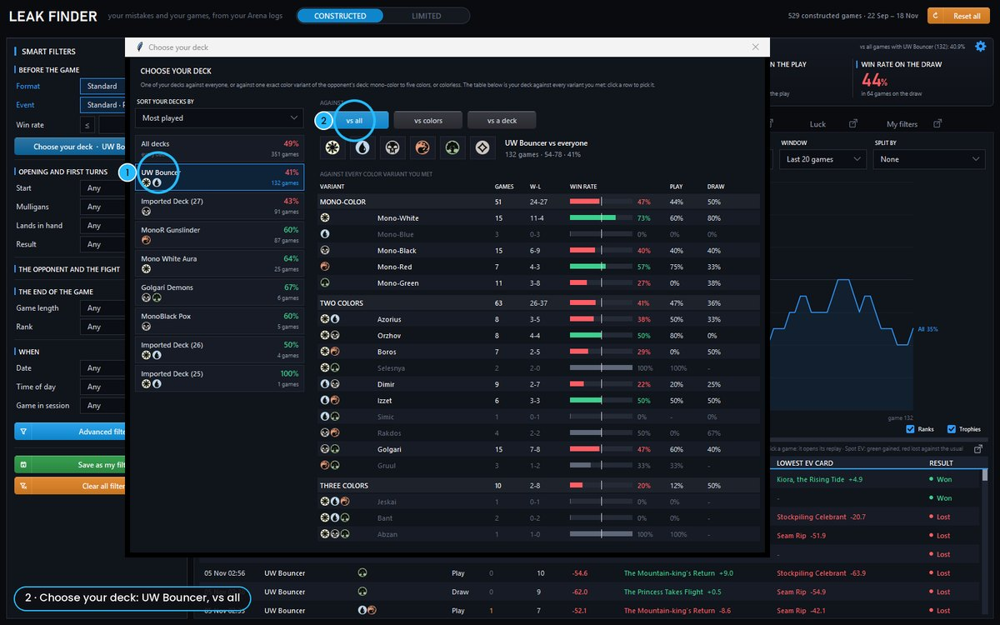
Choosing a deck also changes the folders. With All decks you see the ones about you as a player (Chart, Habits, Spots, Compare, Luck); with a deck, the ones about that deck (Matchups, Cards, Decisions, and Chart, Habits, Spots, Compare following it), and the page opens on Matchups.
On top, the deck at a glance: 41% (the 95% interval goes from 33 to 49%), EV VALUE −11.6%, marked avoid. The deck loses win chance against the usual of your games. Something has to change.
3 · Matchups: where it loses
Open the Matchups folder. One row for every deck you met, with games, record, win rate and EV per game. Sort by any column.
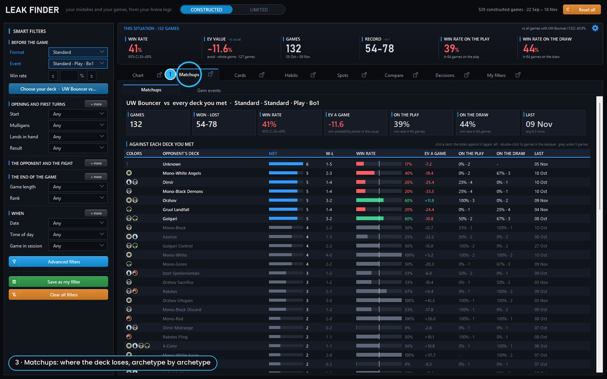
Two questions decide what kind of change you need. Does the deck lose to everyone a little? Then it needs better cards. Does it lose hard to two or three decks? Then it needs answers to those decks. Click a row and the whole page follows only the games against that deck, so every step below can be repeated for your worst matchup.
4 · Cards: the cards that pull their weight
Open Cards, sub-tab By games. The gear on the left chooses which rows you read. For tuning, start with two of them.
- DRAWN VS NOT DRAWN: your win rate when the card came to your hand minus when it stayed in the deck. The cleanest single number for a card in a deck.
- EV IN PLAY: the win-probability points your turns made above or below the usual while the card was on your battlefield. Under each card: how often it survived, the win rate with and without it, and whether it did better with a partner or alone.
The rows put the strongest cards first, and they show as many as fit the width of the window. To read them from the other end, press ⇅ Weakest first on the row: the cards that do the least come first. Cards with too few games stay at the end either way, so a card drawn in 5 games out of 132 can't jump to the top.
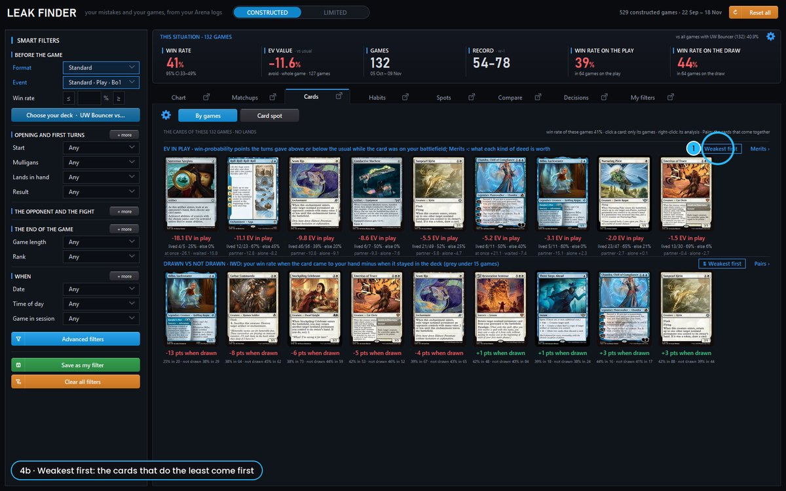
5 · The cards that get stuck
Switch the rows to HARDER TO CAST and EV AT CAST.
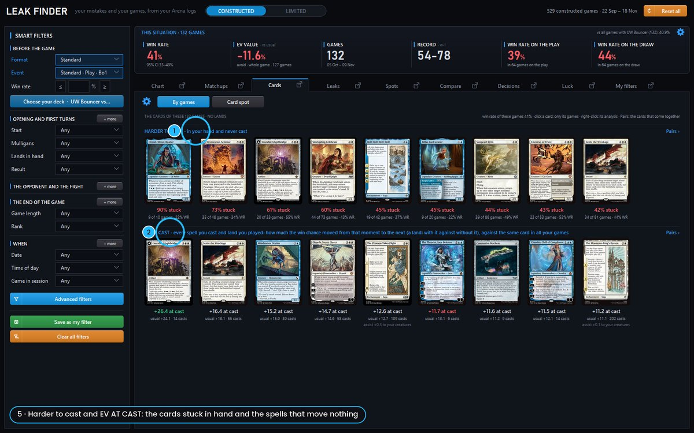
A card that sits in your hand is a card you are not playing. If it gets stuck in many games, the problem is the curve or the mana, not bad luck. EV AT CAST is the other half: when you do cast a spell, how much the win chance moved, against the same card in all your games. It is the row for the spells that don't stay on the battlefield, bounce and removal, which EV IN PLAY cannot see.
6 · The cards you must not cut
Before cutting anything, look at WIN CONDITIONS (the cards that dealt the lethal blow, or the most damage when they conceded) and FINISHERS (the decisive two-card play of your wins).
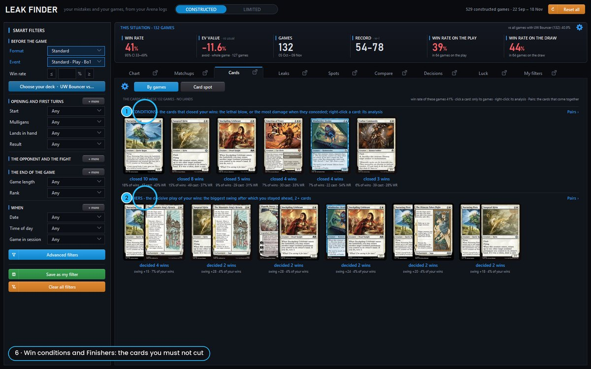
A card can be stuck in hand and still win games. Stockpiling Celebrant is both: it gets stuck often and it closes some wins. That is exactly the card to look at by itself.
7 · Card spot: one suspect under the lens
Switch to Card spot and write the card name (or right-click a card in any row). The page is about that card in this deck.
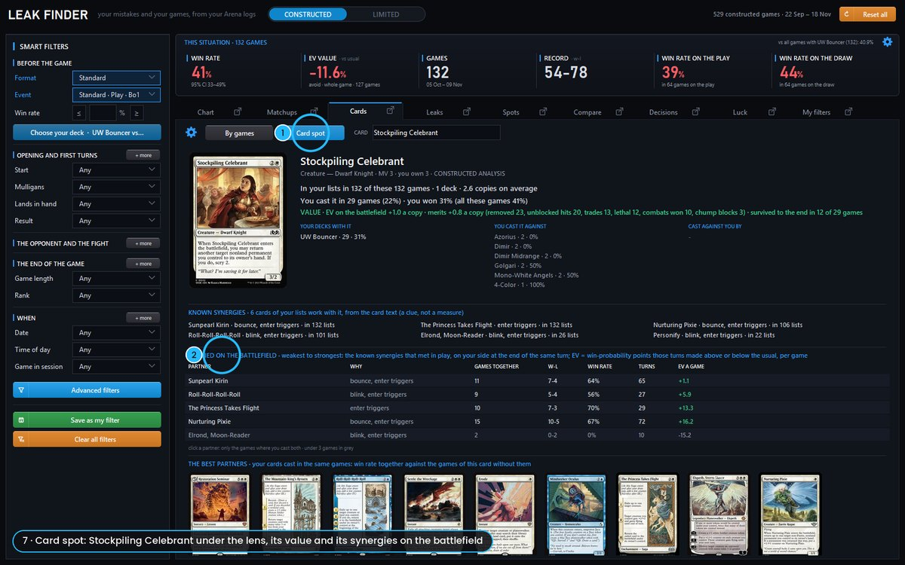
Then VERIFIED ON THE BATTLEFIELD: the synergies the card text suggests, measured only when both cards were really in play together. With Nurturing Pixie the pair went 10-5 in 15 games and gained 16 points a game; with Elrond, Moon-Reader 0-2. The card is weak on its own and good next to a bounce creature: cutting it also weakens Pixie.
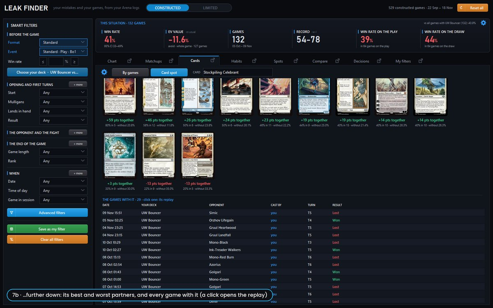
8 · What beats you
Back to By games, rows THE THREATS THAT BEAT YOU and THEIR CARDS · WHEN AND ON WHAT. The first lists the opponent's cards that appear in more of your losses than your wins; the second, on which turn they cast them and which of your cards they hit.
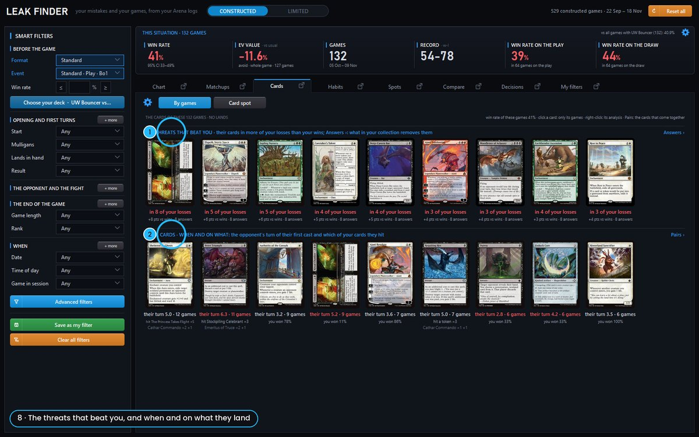
9 · What answers it: owned, or to craft
Press Answers › on the threats row. For every threat, the cards in your deck's colors that read like an answer to it. Tick Include craftable to see also the ones you don't own, with the rarity of the wildcard they cost.
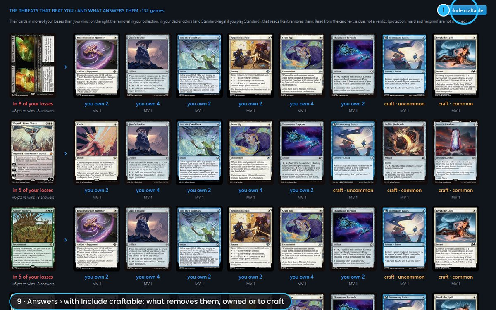
This is the list of what to add. The tool reads the answers from the card text: protection, ward and hexproof are not checked, so read the card before you put it in. And it cannot know how the new card will do in your deck: only playing it will tell.
10 · Check the suspect against the whole deck
Before you cut, one last check. In Cards, a click on a card keeps only the games where it was in your hand. Then go to Chart and tick vs filter: the blue line is those games, the white line all the games of the deck.
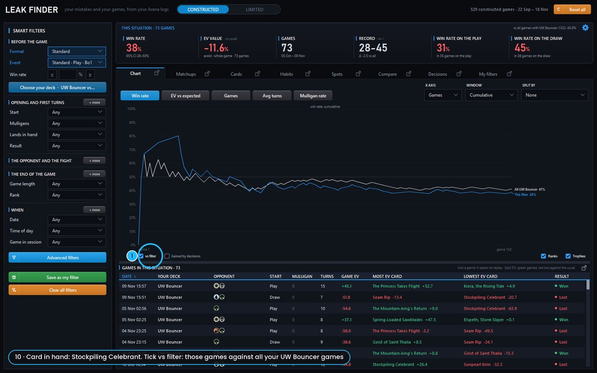
Three points below the deck, and an interval that contains the deck's win rate: the card is a candidate, not a proven cut. The EV value on top says the same: −11.6%, exactly like the whole deck. This is a typical result, and an honest one. A real cut usually shows up on several rows at once: stuck in hand, negative when drawn, little EV in play, no synergy that works.
The loop
- Cut the card that is weak on several rows and has no partner it makes better.
- Put in the answer to the threat that beats you most, owned first, crafted only if the matchup is frequent.
- Play 20 to 30 games with the new list.
- Come back to steps 3, 4 and 10 and compare. Keep the same deck name in Arena: the old games and the new ones stay together, and the Date filter separates the list before the change from the list after.
The Leak Finder will not build the deck for you. It tells you where your games go wrong, which of your cards carry the deck, and what to look for. The rest is still your choice, and a few more games.